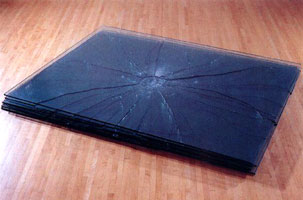
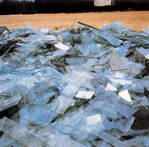

back to: destruction process art radical art
Shatter
 Barry Le Va: Shatter Scatter, 1968/1971
 Robert Smithson: Map of Broken Glass, 1969
Michel François: Néon Brisé, 2002
To add: Wim T. Schippers: Glass shards installation, Museum Fodor, Amsterdam, 1962.